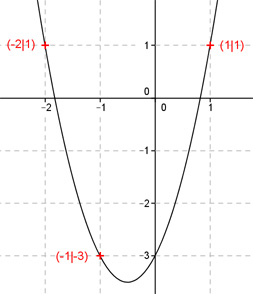
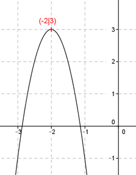

Aufgabe 1
Der Graph einer ganzrationalen Funktion 2. Grades
geht durch die Punkte A(0|0) und B(2|-3) und hat
in B eine Steigung von -4.
Wie lautet seine Funktionsgleichung?

Wie löse ich Matheaufgaben?
Steckbriefaufgaben
Sie sehen ein gelbes Eingabefeld und die
Schalter: Prüfen und Lösung.
Tragen Sie Ihr Ergebnis ein, prüfen Sie es
oder starten Sie eine Lösung.
Aufgabe 1 Der Graph einer ganzrationalen Funktion 2. Grades geht durch die Punkte A(0|0) und B(2|-3) und hat in B eine Steigung von -4. Wie lautet seine Funktionsgleichung?
Aufgabe 2 Der Graph einer ganzrationalen Funktion 2. Grades schneidet die x-Achse bei 4 und -4. Bei x = 4 schneidet er sie unter einem Winkel von 45°. Wie lautet seine Funktionsgleichung? f(x) = 0,125x2
Aufgabe 3 Der Graph einer ganzrationalen Funktion 2. Grades geht durch die Punkte (-1|0), (0|-1) und (1|0). Wie lautet seine Funktionsgleichung?

Aufgabe 4 Der Graph einer ganzrationalen Funktion 2. Grades geht durch die Punkte (0|0), (1|0) und (2|3). Wie lautet seine Funktionsgleichung? f(x) = 1,5x2 - x
Aufgabe 5 Alle Graphen einer ganzrationalen Funktion 2. Grades gehen durch die Punkte (-1|2) und (1|2). Wie lautet die Funktionsgleichung dieser Kurvenschar?

Aufgabe 6 Alle Graphen einer ganzrationalen Funktion 2. Grades gehen durch die Punkte (2|0) und (-2|0). Wie lautet die Funktionsgleichung dieser Kurvenschar? f(x) = ax2 -
Aufgabe 7 Alle Graphen einer ganzrationalen Funktion 2. Grades gehen durch die Punkte A(2|0) und B(4|0) und haben an der Stelle x = 3 ein Maximum. Wie lautet die Funktionsgleichung dieser Kurvenschar?

Aufgabe 8 Der Graph einer ganzrationalen Funktion 2. Grades geht durch die Punkte A(0|2) und B(6|8) und berührt die x-Achse im Punkt (c|0). Wie lautet seine Funktionsgleichung? f(x) = 0,5(x - )2
Aufgabe 9 Alle Graphen einer ganzrationalen Funktion 2. Grades gehen durch die Punkte (0|0) und (2|0) und haben an der Stelle x = 1 ein Minimum. Wie lautet die Funktionsgleichung dieser Kurvenschar?

Aufgabe 10 Der Graph einer ganzrationalen Funktion 2. Grades geht durch die Punkte (-1|2), (1|3) und (3|2). Wie lautet seine Funktionsgleichung? f(x) = 0,25x2 + x + 2,75
Aufgabe 11 Der Graph einer ganzrationalen Funktion 2. Grades geht durch die Punkte (-1|-3), (1|1) und (-2|1). Wie lautet seine Funktionsgleichung? 
Aufgabe 12 Alle Graphen einer ganzrationalen Funktion 2. Grades gehen durch die Punkte (-4|0) und (0|-4). Wie lautet die Funktionsgleichung dieser Kurvenschar? f(x) = ax2 + (4a - 1) -
Aufgabe 13 Eine nach oben geöffnete und um den Faktor 3 gestreckte Parabel hat ihren Scheitelpunkt im Punkt (0|-2). Wie lautet ihre Funktionsgleichung?

Aufgabe 14 Eine nach unten geöffnete Normalparabel hat ihren Scheitelpunkt im Punkt (4|0). Wie lautet ihre Funktionsgleichung? f(x) = - (x - )2
Aufgabe 15 Eine um den Faktor 4 gestreckte Parabel hat ihr Maximum bei (-2|3). Wie lautet ihre Funktionsgleichung? 
Aufgabe 16 Eine um den Faktor 0,5 gestauchte und nach oben geöffnete Parabel geht durch die Punkte (4|0) und (2|0). Wie lautet ihre Funktionsgleichung? f(x) = 0,5x2 x + 4
zurück